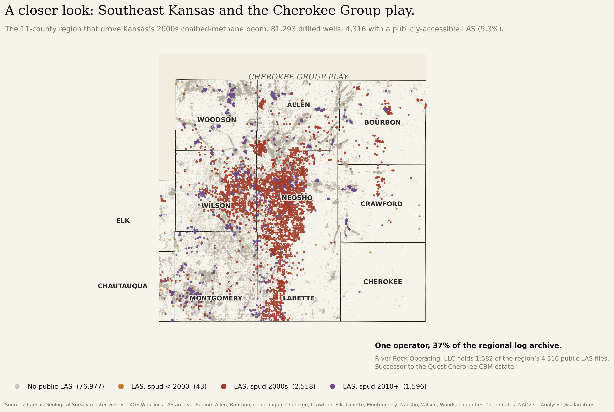
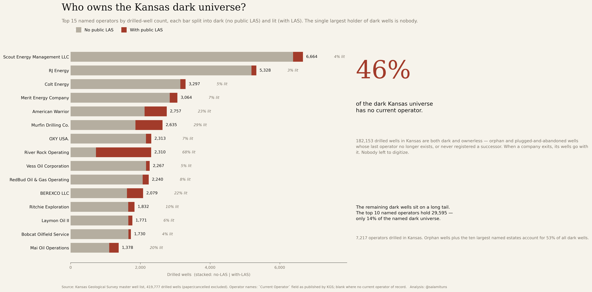
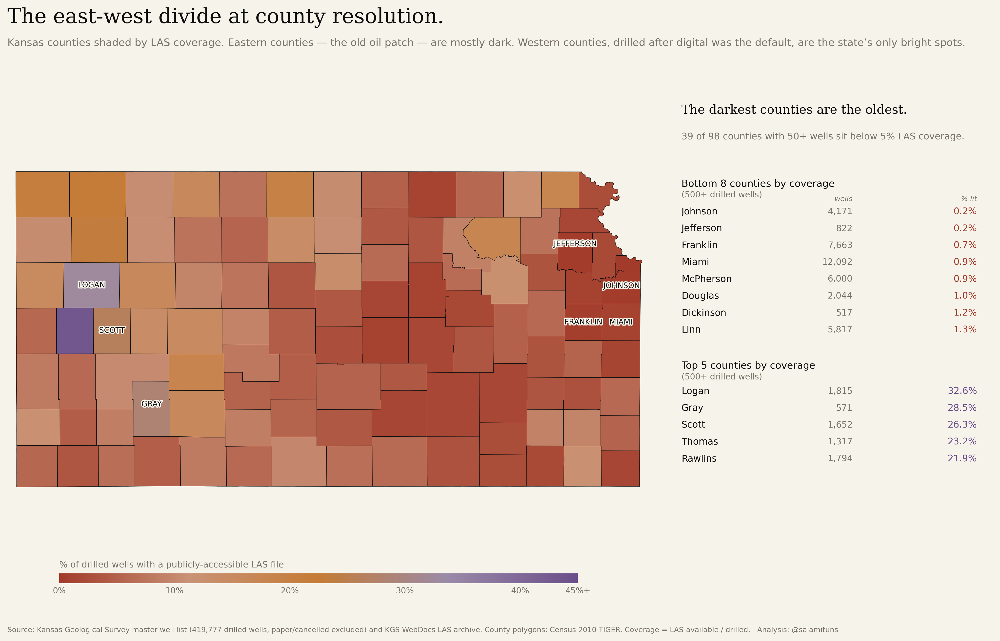

Where Kansas oil data lives.
Kansas has 419,777 drilled oil and gas wells on the state’s master list. 23,897 of them (5.7%) have a publicly-accessible digitized log. The other 94.3% are dark. This is the first post in a basin-by-basin walk through what the US subsurface industry can actually see of its own history.
Why this matters
Industry estimates put the share of subsurface data that is never analyzed beyond first acquisition at something like 99.5%. That number is true and useless, too abstract to act on. Put it on a real map of a real state and the shape sharpens: dark data is a stratigraphy of time, not a scanning backlog. Most of Kansas was drilled before anyone was required to file a machine-readable log. The paper moved through M&A, warehouse fires, and retirements. What remains is a century-wide information gap sitting under the working rigs.
The Numbers
The Figures

419,777 wells. 94.3% dark.
Every drilled well in Kansas on one frame, classified by whether the state’s bulk LAS archive holds a digitized log. The ghost layer is the dark universe. The coloured dots are the 23,897 lit wells, split by spud decade: amber for pre-2000, clay for the 2000s, violet for 2010+. The companion bar chart underneath reads the same story in time: the 2010s is the first decade where digital was the default.
![ Figure 02 · Cherokee close-up One operator, 37% of the regional archive. Zoom into the red cluster in the southeast. Eleven counties covering the Pennsylvanian-age coalbed-methane fairway where the 2000s boom concentrated. 81,293 drilled wells; 4,316 with a public LAS (5.3%). River Rock Operating (successor to the Quest Cherokee CBM estate) holds 1,582 of those 4,316. When one operator owns most of the region’s logging effort, the “public” archive is effectively that operator’s archive.](figures/kansas_cherokee_closeup.png){kind=link}

One operator, 37% of the regional archive.
Zoom into the red cluster in the southeast. Eleven counties covering the Pennsylvanian-age coalbed-methane fairway where the 2000s boom concentrated. 81,293 drilled wells; 4,316 with a public LAS (5.3%). River Rock Operating (successor to the Quest Cherokee CBM estate) holds 1,582 of those 4,316. When one operator owns most of the region’s logging effort, the “public” archive is effectively that operator’s archive.
![ Figure 03 · Who owns the dark The single largest holder of dark wells is nobody. Top-15 named Kansas operators by drilled wells, each bar split into dark (no public LAS) and lit (with LAS). The callout is the spine: 46% of the dark universe has no current operator of record: 182,153 wells whose last operator no longer exists or never registered a successor. The rest of the dark sits on a long tail: 7,217 distinct named operators across the century; the top ten hold only 14% of the remaining dark.](figures/kansas_operators_dark.png){kind=link}

The single largest holder of dark wells is nobody.
Top-15 named Kansas operators by drilled wells, each bar split into dark (no public LAS) and lit (with LAS). The callout is the spine: 46% of the dark universe has no current operator of record: 182,153 wells whose last operator no longer exists or never registered a successor. The rest of the dark sits on a long tail: 7,217 distinct named operators across the century; the top ten hold only 14% of the remaining dark.
{kind=link}

The east-west divide at county resolution.
The east-west gradient from the hero map, resolved per county. 39 of 98 counties with 50+ wells sit below 5% LAS coverage. Johnson County (drilled heavily in the 1920s and 1930s): 0.2% of 4,171 wells digitized. Wichita County (drilled after 2000): 43% of 447. Same state, two centuries of operator behaviour.
Dark data in Kansas is a stratigraphy of time. Most of it belongs to companies that no longer exist.
Context
A LAS file (Log ASCII Standard) is what an analyst loads when they want to know what’s in a rock. It is the machine-readable version of the wireline log that a logging truck runs after a well is drilled. Older wells have paper logs, or no log at all. The paper is not the same as a LAS file: it cannot be regressed against, cannot be fed into a neural net, cannot be joined to a production database. For the purpose of any analysis beyond reading an individual log by eye, the paper era is functionally dark.
Kansas is the cleanest public subsurface-data pipeline in the United States. The Kansas Geological Survey publishes two things openly: a master well list (515,000 records deduping to 477,000 unique wells) and a bulk archive of LAS files. Most state regulators make you scrape per-county case-file PDFs. Kansas is a ten-minute download. That is why it is the proof-of-concept: cheap to execute, fast feedback, teaches the pipeline before we attack messier states.
Why the gap matters. Every dark offset well is pre-drill intelligence nobody extracted. A 1950 dry hole in the next section tells you what’s in your rock, if anyone digitized it. For investors and basin analysts, the first party to digitize a regional log archive has an information monopoly; in brownfield M&A, the dark-data gap is the fog of war. For policy and climate work (orphan-well remediation, groundwater contamination attribution, methane-leak source identification, carbon sequestration site selection) all of these require decades of old logs that don’t exist in machine-readable form. You cannot remediate what you cannot locate.
This is post 01 of a basin-by-basin series. Next: the Permian, Texas plus southeast New Mexico. Neither the Texas Railroad Commission nor the New Mexico OCD publishes a public LAS archive at the Kansas level of openness. The data picture there is almost certainly worse.
Data & sources
- Pipeline & figures
-
Every figure on this page is reproducible from the two-file KGS source. The repo below contains the scripts (
phase2_kgs_merge.pythroughphase6_county_choropleth.py), the merged master-with-LAS dataset, and the headline-number notes.Data pipeline, figure scripts, and intermediate files: github.com/salamituns/darkdata-repo.
- KGS Master Well List
- 515,000 records from the Kansas Geological Survey, deduped to 477,000 unique API numbers and filtered to 419,777 drilled wells (paper intents and cancelled APIs excluded). Includes API, operator, county, spud and completion dates, latitude/longitude (NAD27), and current status.
- KGS WebDocs LAS Archive
- Bulk list of LAS-available wells. Join key is API (twelve-digit, no dashes). Coverage: 23,897 of the 419,777 drilled wells.
- US Census County Boundaries
- 2010 TIGER/Line county polygons for the choropleth and the Cherokee close-up.
Method
Dedupe. The KGS master list ships 515,000 records but the true drilled-well count is smaller. API numbers are deduplicated after normalising the format (strip dashes, strip trailing .0 introduced by Excel round-trips). Records whose status is Approved Intent, Expired Intent, or Cancelled API (i.e. “paper” wells that were permitted but never drilled) are excluded. Net: 419,777 drilled wells.
Dark/lit classification. Join the drilled-well table to the KGS LAS inventory on the normalised API key. A well is “lit” if at least one LAS file exists for it in the WebDocs archive; “dark” otherwise. This is a proxy, not a complete measure. A well can have a scanned paper log behind a paywall, or a proprietary LAS inside an operator archive, and still count as dark here. The proxy captures what a third-party analyst can see without writing a cheque, which is the quantity the series is about.
Vintage bucketing. Spud year parsed from the Spud Date field with pd.to_datetime(errors='coerce'). Real date coverage is 63.5% of drilled wells; the remaining wells go into an “unknown” bucket and are excluded from decade-level reads. The decade-level LAS coverage rate uses the decade’s denominator, not a state-wide average.
Orphan definition. A well is considered “orphan” for the Figure 03 callout if the Current Operator field is blank. This is the state’s own record: some of these are plugged-and-abandoned wells whose last operator no longer exists, some are wells where the transfer of ownership was never filed, and some are genuine unknowns. The “nobody” in the callout is whichever of those three a specific well happens to be.
Cherokee region definition. Eleven counties: Allen, Bourbon, Chautauqua, Cherokee, Crawford, Elk, Labette, Montgomery, Neosho, Wilson, Woodson. Bounding box for plotting: 36.93–38.15 N, -96.05 to -94.55 W.
Processing in Python: pandas, geopandas, shapely. Figures are matplotlib at 300 DPI. Coordinates are NAD27 as published by KGS.